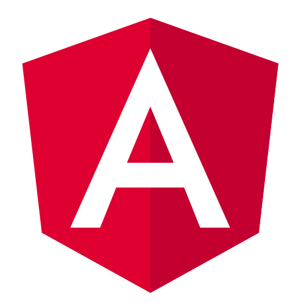

<div class="ForkMeOnGithub fixed top-0 right-0 mt-10 -mr-12 transform rotate-45 bg-gray-900">
  <a 
    href="https://github.com/dimaslz/ng-heroicons" 
    target="_blank" 
    class="flex text-gray-300 hover:text-gray-100 px-10 py-1 border border-white my-1 border-dashed"
  >Fork me on GitHub</a>
</div>

<div class="container my-0 mx-auto pb-16">
  <div class="Header flex flex-col items-center">
    <div></div>
    <h1 class="text-6xl">ng-heroicons</h1>

    <div class="Header__install">
      <code class="bg-gray-900 flex p-4 text-sm rounded text-gray-400 shadow-inner">
        <pre>$ yarn add @dimaslz/ng-heroicons</pre>
      </code>
    </div>
  </div>

  <h2 class="text-center my-4 text-lg font-light">
    Angular components to use <a class="text-purple-500 hover:text-purple-400" href="https://heroicons.com/">Heroicons</a> in your projects.
  </h2>

  <icons></icons>

  <div class="fixed bottom-0 right-0 w-full text-xs p-4 text-right bg-white">
    developed with ♥ by <a href="https://twitter.com/dimaslz" class="hover:text-gray-600">dimaslz</a> (fork in <a href="https://github.com/dimaslz/ng-heroicons" class="hover:text-gray-600">Github</a>)
  </div>
</div>